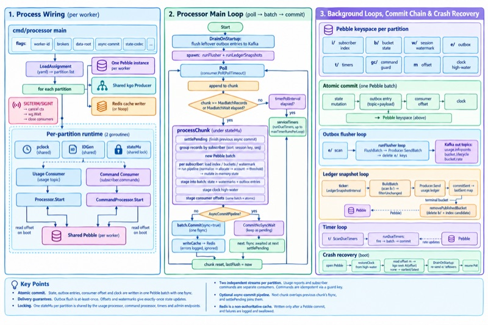

View diagram ↗
Telecom
Quota runtime
Partitioned stream processor that rebuilt a telecom quota platform on Redpanda with embedded Pebble storage, replacing Redis, Lua, PostgreSQL and NATS. Benchmarked at 329k records/s across 64 partitions.
- Atomic commit: state, outbox entries, consumer offset and clock in one Pebble batch, one fsync
- Exactly-once state via offsets and watermarks; at-least-once outbox flush to Kafka
- Two streams per partition (usage + commands) sharing one lock; commands idempotent via a guard key
- Crash recovery: restore clock, seek stored offset, re-send leftover outbox entries, resume
- Redpanda
- Pebble
- Kubernetes
- Go